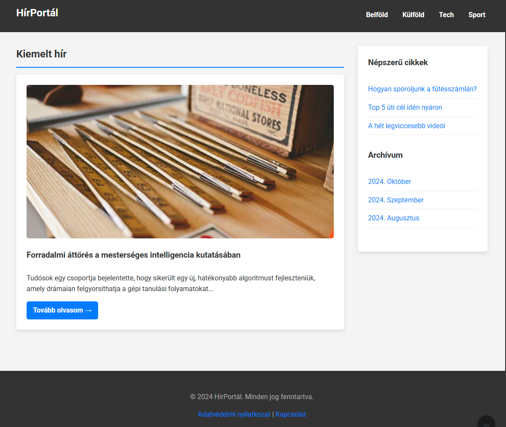

Szemantikus oldalstruktúra
Az előző héten megismertük a HTML alapvető építőköveit: az elemeket, attribútumokat, címsorokat, bekezdéseket, listákat és linkeket. Ezekkel már képesek vagyunk egyszerűbb dokumentumokat létrehozni. Ezen a héten egy lépéssel tovább megyünk, és megnézzük, hogyan adhatunk a weboldalainknak egy magasabb szintű, szemantikus struktúrát, valamint hogyan jeleníthetünk meg komplex, táblázatos adatokat.
A weboldal elrendezése: Szemantikus struktúra
A legtöbb weboldal, bár vizuálisan eltérő lehet, általában hasonló fő részekből áll. Gondoljunk csak egy tipikus hírportálra vagy egy céges bemutatkozó oldalra. A HTML5 bevezetett egy sor új, szemantikus elemet, amelyekkel pontosan leírhatjuk ezeket a logikai egységeket. Ezek használata nemcsak a kódunkat teszi olvashatóbbá, de kritikus fontosságú az akadálymentesítés (pl. képernyőolvasó szoftverek számára) és a keresőoptimalizálás (SEO) szempontjából is.
Egy tipikus weboldal főbb részei a következők:
- Fejléc (header): Általában az oldal tetején található sáv, amely a logót, a főcímet és esetleg egy mottót tartalmazza. Ez a rész többnyire minden aloldalon azonos.
- Navigációs sáv (navigation bar): A webhely főbb szekcióira mutató linkek gyűjteménye, legtöbbször menüként vagy fülekként megvalósítva. A konzisztens navigáció elengedhetetlen a jó felhasználói élményhez.
- Főtartalom (main content): A központi, legnagyobb terület, amely az adott oldal egyedi tartalmát hordozza (pl. egy cikk, egy terméklista, egy videó). Ez az a rész, ami aloldalról aloldalra a leginkább változik.
- Oldalsáv (sidebar): Kiegészítő információkat, linkeket, hirdetéseket tartalmazó sáv. Tartalma gyakran kapcsolódik a főtartalomhoz (pl. kapcsolódó cikkek).
- Lábléc (footer): Az oldal alján elhelyezkedő sáv, amely általában a copyright információkat, elérhetőséget vagy impresszumot tartalmazza.

TASK
Azonosítsd be a weboldal főbb részeit a fenti képen!
HTML5 strukturális elemek
A HTML5 dedikált tageket biztosít az oldal különböző részeinek a jelölésére.
<header>: Egy bevezető tartalmi csoportot jelöl. Ha a<body>közvetlen gyermeke, akkor az oldal globális fejlécét definiálja. Ha egy<article>vagy<section>elemen belül van, akkor az adott szekció fejlécét jelöli.<nav>: Az oldal elsődleges navigációs linkjeit tartalmazza. Másodlagos linkcsoportok (pl. egy láblécben) nem feltétlenül tartoznak ide.<main>: Az oldal központi, egyedi tartalmát foglalja magába. Egy oldalon csak egy<main>elem lehet, és közvetlenül a<body>-ben kell elhelyezkednie.<article>: Egy önálló, kerek egészet alkotó tartalmi blokkot jelöl, amely a weboldal többi részétől függetlenül is értelmes lenne. Tipikus példa egy blogbejegyzés, egy újságcikk vagy egy fórumhozzászólás.<section>: Egy tematikus csoportosítást jelöl az oldalon belül, amely egy adott funkcionalitást (pl. térkép, hírek doboz) vagy témát fog össze. Jó gyakorlat minden szekciót egy címsorral (<h1>-<h6>) kezdeni.<aside>: Olyan tartalmat jelöl, amely nem szorosan kapcsolódik a főtartalomhoz, de közvetve kiegészítő információt nyújthat (pl. egy szószedet, a szerző életrajza, kapcsolódó linkek).<footer>: Az oldal vagy egy szekció lezáró tartalmát képviseli.
Az alábbi példa a fenti weboldalhoz hasonló vázat mutat be említett elemekkel:
<!DOCTYPE html>
<html lang="hu">
<head>
<meta charset="UTF-8">
<title>HTML5 Oldalstruktúra - Egyszerű Példa</title>
</head>
<body>
<!-- HEADER: Az oldal teteje, a főcím helye. Minden oldalon megjelenhet. -->
<header>
<h1>HírPortál</h1>
</header>
<!-- NAV: A fő navigációs linkek gyűjtőhelye. A "navigation" szóból ered. -->
<nav>
<ul>
<li><a href="#">Belföld</a></li>
<li><a href="#">Külföld</a></li>
<li><a href="#">Tech</a></li>
<li><a href="#">Sport</a></li>
</ul>
</nav>
<!-- MAIN: Az oldal fő, egyedi tartalma. Elvileg minden oldalon más. -->
<main>
<!-- ARTICLE: Egy önálló, teljes tartalmi egység, mint egy blogbejegyzés vagy egy hír. -->
<article>
<h2>Forradalmi áttörés a mesterséges intelligencia kutatásában</h2>
<p>Tudósok egy csoportja bejelentette, hogy sikerült egy új, hatékonyabb algoritmust fejleszteniük, amely drámaian felgyorsíthatja a gépi tanulási folyamatokat.</p>
<!-- SECTION: Az article-ön belüli tematikus alfejezet vagy csoport. -->
<section>
<h3>A kutatás háttere</h3>
<p>A most bemutatott algoritmus évek óta tartó kutatómunka eredménye, amely a neurális hálók hatékonyságának növelését célozta.</p>
</section>
<section>
<h3>Jövőbeli kilátások</h3>
<p>A szakértők szerint az új technológia belátható időn belül a mindennapi életben is megjelenhet, például az önvezető autókban vagy az orvosi diagnosztikában.</p>
</section>
</article>
<!-- ASIDE: Kiegészítő tartalom, ami lazán kapcsolódik a fő tartalomhoz (pl. kapcsolódó linkek, hirdetés). -->
<aside>
<h2>Kapcsolódó témák</h2>
<ul>
<li><a href="#">Mi az a gépi tanulás?</a></li>
<li><a href="#">Híres magyar informatikusok</a></li>
</ul>
</aside>
</main>
<!-- FOOTER: Az oldal lábléce, általában copyright információkkal, kapcsolatfelvételi adatokkal. -->
<footer>
<p>© 2025 HírPortál. Minden jog fenntartva.</p>
</footer>
</body>
</html>
QUESTION
Miben tér el a megadott HTML kód a képen szereplő weboldaltól?
Nem szemantikus konténerek: <div> és <span>
Előfordul, hogy olyan elemeket szeretnénk csoportosítani, amelyekre nincs megfelelő szemantikus tag. Ilyenkor használhatjuk a <div> és <span> elemeket.
<div>: Egy blokk-szintű, általános konténer. Akkor használjuk, ha egy nagyobb tartalmi egységet szeretnénk közrefogni, például stílusozás (CSS) vagy funkcionalitás (JavaScript) hozzáadása céljából, de nincs jobb szemantikus elem a feladatra.<span>: Egy soron belüli (inline), általános konténer. Akkor használjuk, ha egy szövegrészletet szeretnénk megjelölni egy bekezdésen vagy más elemen belül, anélkül, hogy új sort kezdenénk.
Warning
A <div> elemek rendkívül kényelmesek, ezért könnyű túlzásba esni a használatukkal. Mivel nincs szemantikai jelentésük, felesleges használatuk csak "zajossá", nehezebben értelmezhetővé teszi a HTML kódot. Csak akkor használjuk őket, ha nincs jobb szemantikai megoldás!
TASK
Nyiss meg néhány számodra érdekes weboldalt és vizsgáld meg, hogy használják-e a szemantikus tag-eket. Sok ismert weboldal csak részben alkalmazza őket. Gondold át, mi lehet ennek az oka.